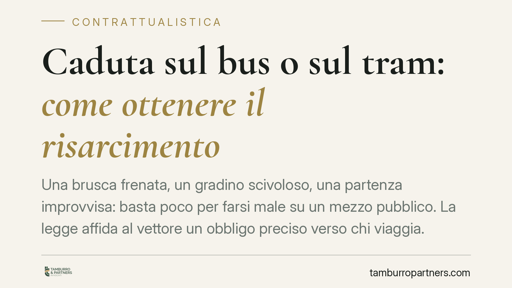

Caduta sul bus o sul tram: come ottenere il risarcimento
Una brusca frenata, un gradino scivoloso, una partenza improvvisa: basta poco per farsi male su un mezzo pubblico. La legge affida al vettore un obbligo preciso verso chi viaggia. Chiarire chi deve provare cosa è il primo passo per valutare una richiesta di risarcimento. Ecco il quadro normativo e le mosse operative da conoscere.

Il fatto e perché conta
Le cadute a bordo di autobus e tram sono più frequenti di quanto si pensi. Frenate brusche, accelerazioni improvvise, apertura anticipata delle porte o pavimenti bagnati possono causare infortuni al passeggero, anche in assenza di collisioni con altri veicoli.
Il punto giuridico centrale è chi deve dimostrare cosa. E qui la posizione di chi ha subito il danno è più solida di quanto molti immaginino.
Inquadramento normativo
Il rapporto tra passeggero e azienda di trasporti è un vero e proprio contratto: acquistando il biglietto (o l'abbonamento) si stipula un contratto di trasporto. Da questo nasce l'obbligo del vettore di portare il passeggero a destinazione sano e salvo.
La norma di riferimento è l'art. 1681 del codice civile, secondo cui il vettore risponde dei sinistri che colpiscono la persona del viaggiatore durante il viaggio, salvo che provi di aver adottato tutte le misure idonee a evitare il danno.
Si tratta di una responsabilità contrattuale con inversione dell'onere della prova. In parole semplici: il passeggero deve dimostrare il danno subito e il collegamento (nesso causale) con il trasporto; è invece l'azienda a dover provare di aver fatto tutto il possibile per evitarlo. Se non ci riesce, risponde.
La Cassazione Civile ha consolidato questo orientamento chiarendo che, per andare esente da responsabilità, non basta al vettore dimostrare di aver rispettato le norme di circolazione: deve provare la causa specifica e imprevedibile che ha reso impossibile evitare il sinistro. Anche una frenata improvvisa per evitare un ostacolo non libera automaticamente l'azienda, se non è dimostrato che era davvero inevitabile.
Implicazioni pratiche per il passeggero
Per chi subisce una caduta, questo significa una posizione probatoria favorevole, ma non automatica.
Occorre comunque dimostrare tre elementi:
- di essere stato un passeggero (biglietto, abbonamento, testimoni, video);
- di aver riportato un danno (documentazione medica);
- che il danno è avvenuto durante il trasporto e in connessione con esso.
Attenzione a un aspetto spesso sottovalutato: la caduta deve essere ricollegabile a una dinamica del trasporto (una manovra, un difetto del mezzo, un pavimento non a norma). Se il passeggero cade per una propria disattenzione, senza alcun collegamento con la condotta del vettore, il risarcimento può essere ridotto o escluso.
È inoltre frequente che il vettore eccepisca il concorso di colpa del viaggiatore (ad esempio, per non essersi tenuto agli appositi sostegni). Il giudice può ridurre proporzionalmente il risarcimento ai sensi dell'art. 1227 c.c.
I tempi
Trattandosi di responsabilità contrattuale, il diritto al risarcimento si prescrive nel termine ordinario. Va però verificato caso per caso, perché la disciplina del trasporto prevede alcuni termini specifici. Non conviene attendere: la prova si deteriora rapidamente e le testimonianze diventano meno affidabili col passare del tempo.
Cosa fare in concreto
- Documenta subito l'accaduto. Conserva il biglietto o l'abbonamento, annota linea, numero del mezzo, data e ora. Se possibile, scatta foto del punto in cui sei caduto e delle eventuali cause (pavimento bagnato, gradino difettoso).
- Raccogli i contatti dei testimoni. Altri passeggeri o il conducente possono confermare la dinamica. Un solo recapito telefonico può fare la differenza in giudizio.
- Fatti visitare senza ritardo. Recati al pronto soccorso o dal medico il giorno stesso. Il referto che collega l'infortunio al momento della caduta è la prova più importante del danno.
- Segnala l'evento all'azienda di trasporti. Invia una comunicazione scritta (PEC o raccomandata) descrivendo l'accaduto e chiedendo la conservazione delle registrazioni delle telecamere di bordo, che spesso vengono sovrascritte in pochi giorni.
- Fai valutare la posizione a un professionista. La quantificazione del danno alla persona e la gestione del concorso di colpa richiedono un'analisi tecnica. Consigliamo di rivolgersi a un legale prima di sottoscrivere transazioni o accettare offerte assicurative.
Una raccolta tempestiva e ordinata delle prove è ciò che, nella pratica, determina la solidità della richiesta.
Disclaimer
Contributo informativo a cura di Tamburro & Partners - Avv. Giuseppe Tamburro. Non costituisce parere legale.
Ogni contratto ha il suo equilibrio.
Se vuoi una revisione delle clausole o una redazione su misura, scrivi allo studio. Ti rispondiamo entro un giorno lavorativo.